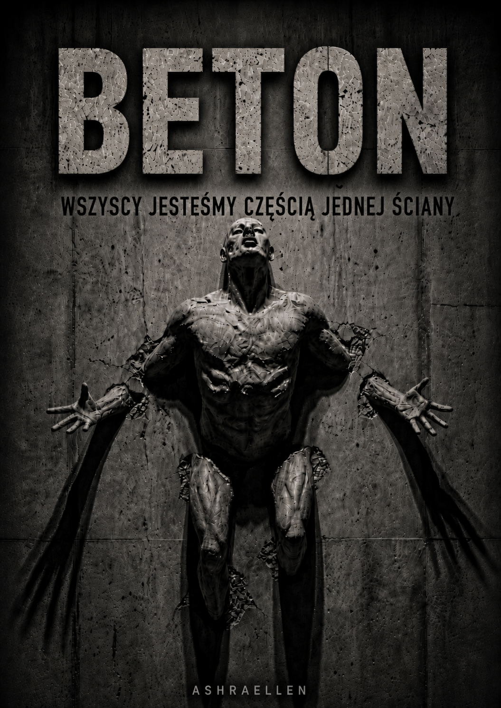
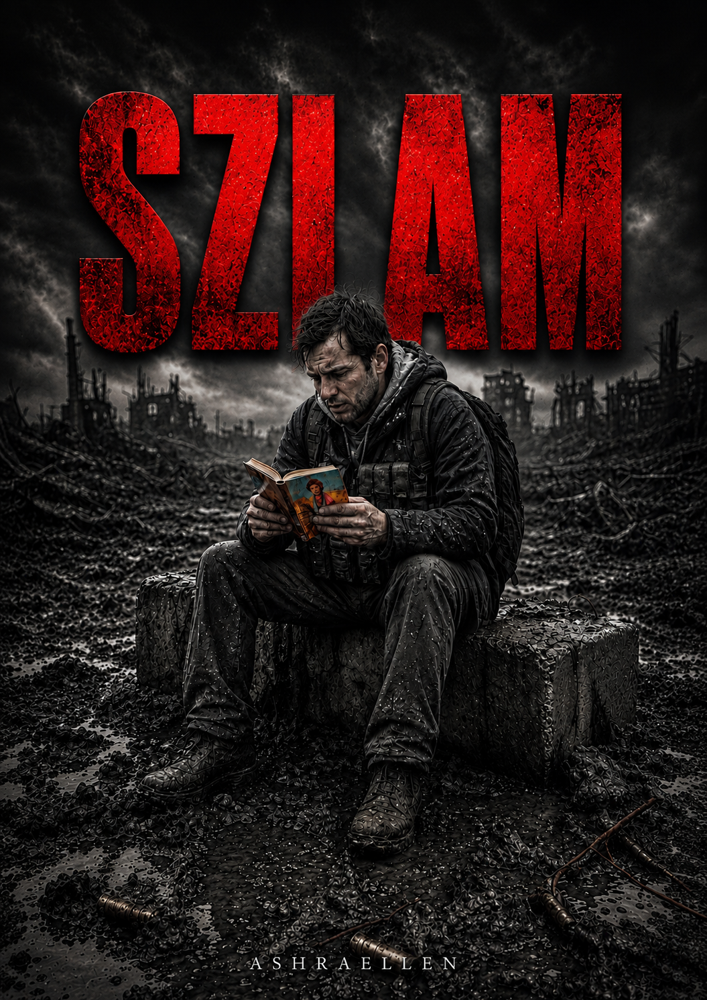
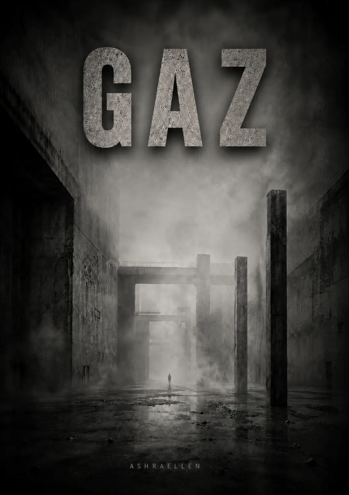

Tom I — BETON
Stabilność staje się więzieniem. Pamięć jest redagowana. Pierwsza szczelina pojawia się wewnątrz samego Systemu.
Otwórz tomAshraellen
PROTOKÓŁ ROZPADU MATERII SPOŁECZNEJ / BETON — SZLAM — GAZ
MONOLITH to literacko-filozoficzna trylogia antyutopijna o kontroli, pamięci i rozpadzie systemów. Trzy tomy rejestrują przejście materii społecznej przez trzy stany: BETON, SZLAM i GAZ — od skamieniałej stabilności, przez lepką deformację, po całkowite rozszczelnienie formy.
System nie boi się buntu.
Boi się pierwszej szczeliny.
BETON / SZLAM / GAZ
Przed tobą kronika kontrolowanego rozpadu: konsekwentny zapis przemiany fazowej materii społecznej, utrwalonej w trzech stanach — BETON, SZLAM i GAZ.
Nie chodzi tu o prognozę przyszłości, lecz o materiał teraźniejszości: porządek, który zbyt długo nazywano bezpieczeństwem; pamięć, którą wygodniej poprawić niż usłyszeć; człowieka, który zaczyna dostrzegać szczelinę, zanim system przyzna, że ona istnieje.
BETON jest stadium skamieniałej stabilności, w którym porządek staje się więzieniem. SZLAM jest stadium lepkiej deformacji, w którym człowiek stopniowo traci formę i zaczyna zgadzać się ze środowiskiem. GAZ jest stadium rozszczelnienia, w którym dawne struktury nie potrafią już utrzymać sensu.
To nie fantastyka o odległej przyszłości. To bezwzględny artystyczny zapis tego, jak system wchodzi w pamięć, język, ciało, strach, nawyk i normalność.
otwórz stronę książki

Stabilność staje się więzieniem. Pamięć jest redagowana. Pierwsza szczelina pojawia się wewnątrz samego Systemu.
Otwórz tom
Po pierwszej szczelinie forma zaczyna się rozpadać. Człowiek stopniowo staje się substancją środowiska.
Otwórz tom
Ostateczne rozszczelnienie. Sens zaczyna rozprzestrzeniać się tam, gdzie dawna forma nie utrzymuje już ciśnienia.
Otwórz tomkontrola, pamięć, forma
MONOLITH bada system nie jako zewnętrznego złoczyńcę, lecz jako sposób organizowania percepcji. Kontrola działa tu nie tylko przez rozkaz, zakaz czy karę. Wchodzi w język, codzienną normę, pamięć, lęk przed błędem i nawyk zgadzania się z tym, co już nazwano właściwym.
Forma artystyczna pozwala pokazać to, co wprost trudno wyjaśnić: chwilę, w której człowiek wciąż jest pewien, że myśli samodzielnie, chociaż jego wewnętrzne reakcje zostały już skalibrowane. Nie pamięta wszystkiego, co się wydarzyło. Nie boi się wszystkiego, co niebezpieczne. Zgadza się nie dlatego, że został przekonany, lecz dlatego, że środowisko dawno nauczyło go wybierać wygodną wersję rzeczywistości.
Trylogia pracuje z obrazem materii społecznej. W BETONIE społeczeństwo twardnieje: forma wydaje się wieczna, a szczelina staje się przestępstwem. W SZLAM forma mięknie: nacisk przestaje wyglądać jak ściana i staje się środowiskiem. W GAZIE struktury utrzymujące całość rozszczelniają się: kontrola próbuje przestać być widoczna i rozpuścić się w samym powietrzu normalności.
MONOLITH nie objaśnia systemu wykładem. Rejestruje go przez scenę, protokół, zapach, pamięć, procedurę, zmęczenie, błąd i wewnętrzny szum. Badanie odbywa się nie nad tekstem, lecz wewnątrz niego — tam, gdzie człowiek po raz pierwszy zauważa, że jego rzeczywistość została zredagowana, zanim zaczął jej bronić.
trzy stany / dziewięć oznak
skamieniała stabilność
Forma wydaje się wieczna, ponieważ wszystko, co żywe w jej wnętrzu, zostało już ogłoszone defektem.
lepka deformacja
Forma nie chroni już człowieka, ale nadal zatrzymuje go wewnątrz środowiska.
rozszczelnienie formy
Dawne pojemniki rozpadają się, a kontrola próbuje stać się niewidoczna i swojska.
czytelnicy i współpraca zawodowa
MONOLITH może być bliski czytelnikom, dla których ważna jest antyutopia bez dekoracyjnego neonu i wygodnej heroiki: surowa filozoficzna proza o kontroli, pamięci, strachu, presji systemu i człowieku, który zaczyna słyszeć błąd wewnątrz przesadnie uporządkowanego świata.
Seria jest otwarta na współpracę wydawniczą, translatorską i redakcyjną. Jej zawodowy potencjał wynika z połączenia formy antyutopijnej, prozy filozoficznej i artystycznego badania kontroli, pamięci oraz rozpadu systemów.
granice serii
MONOLITH nie jest prognozą przyszłości. Nie twierdzi, że świat koniecznie stanie się właśnie taki. Pokazuje, jakie procesy stają się możliwe, kiedy kontrola wchodzi w pamięć, język, ciało, strach i nawyk.
MONOLITH nie jest instrukcją buntu. Seria nie romantyzuje oporu i nie sprzedaje heroicznej pozy. Interesuje ją cichszy i bardziej niebezpieczny moment: pierwsza wewnętrzna szczelina.
MONOLITH nie jest pamfletem politycznym. Władza jest tu ważna nie jako szyld, partia czy reżim, lecz jako logika zdolna powtarzać się w różnych systemach, organizacjach, rodzinach, językach i sposobach myślenia.
MONOLITH nie jest dekoracyjnym cyberpunkiem o gadżetach. Technologia pozostaje drugorzędna. Głównym mechanizmem jest redagowanie rzeczywistości, pamięci i normy.
MONOLITH nie jest fantazją technologiczną. Jego chłód nie tkwi w maszynach, lecz w procedurach, nawykach, raportach, poprawkach, łagodnych sformułowaniach i zgodzie człowieka na własne ściśnięcie.
MONOLITH jest artystycznym badaniem tego, jak logika systemu wnika w człowieka tak głęboko, że zaczyna on brać nacisk za porządek, strach za rozsądek, a brak szczelin za życie.
sygnał
Rozpad nie zaczyna się wtedy, gdy wali się ściana.
Zaczyna się, gdy człowiek po raz pierwszy słyszy w niej pomruk.
 — mark of presence
— mark of presence